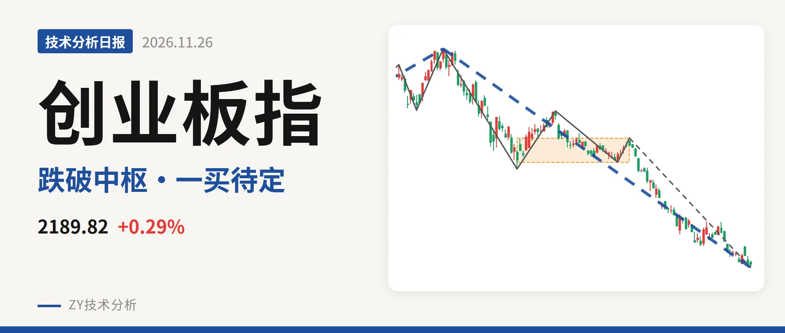
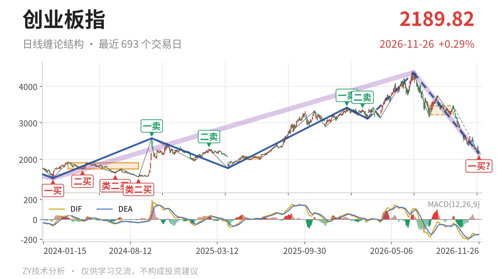
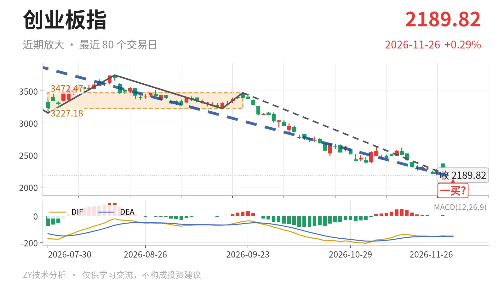

创业板指｜2155点暂定一买，下跌笔仍在延续

最近日线中枢 3227.18—3472.47点，收盘位于中枢之下
一句话：6月25日以来下跌段延续，9月22日下跌笔末端现暂定一买，结构仍偏弱
🧭 走势结构：上攻后的回落段还在延续
当前处于2024年2月5日以来上涨段的回落段，6月25日开始的日线下跌线段没有结束。该上涨段自1482.99点升至4380.41点，涨约195.4%，整体没有结束；但6月25日以来从4380.41点的回落段已跌约50.8%，至今仍在延续。日线线段内部已有5笔，最新一笔9月22日至11月26日尚未走完，因此日线结构仍以回落为主。

📐 中枢与位置：跌破最近日线中枢，跌回历史线段中枢
最近一个日线笔中枢是7月30日至9月22日的3227.18—3472.47点，尚未完成。最新收盘 2189.82点 已低于该中枢下沿约32.1%，说明价格从中枢向下离开。价格同时回到2022年4月27日至2023年8月4日的线段中枢2122.32—2282.65点之内，距下沿约67点、距中轴 2202点 约13点。中枢位置由3227点上方下移到2122—2282点区间，重心下移。
🎯 买卖点：2155.01点的暂定的一买
日线笔级别上，11月26日出现 2155.01点 的暂定的一买，但所在笔9月22日至11月26日还在延续，后续若跌破2155.01点，该买点只对应更小级别。此前1月13日一卖3416.84点、2月25日二卖3363.18点，位置一个比一个低，反弹高点下移，只是反弹段中的卖点。当前暂定的一买放在这个下跌段里看，只是对9月22日以来下跌笔的短线反应，尚未改变日线下跌段。

⚡ 背驰：价格新低，绿柱面积没有同步放大
比较同向两笔下跌：6月25日至7月30日下跌笔绿柱面积1837、DIF低点-171.1；9月22日至11月26日下跌笔暂有绿柱面积1110、DIF低点-204.5。后者价格创出2155.01点新低，DIF低点也下移，但绿柱面积由1837缩至1110，不属于标准的“新低不新弱”，只能算下跌力度局部衰减。由于当前下跌笔没有结束，面积与DIF低点还会随走势延续变化，背驰只作暂定观察。
🧿 关键位置观察：反抽看3227点，下沿看2122点
反抽若回不到最近日线笔中枢下沿 3227点 上方，结构上构成对7月30日至9月22日中枢的三卖，下跌段仍会保持偏弱。重新站上3227点一线，则下跌更可能只是该中枢扩展，回到震荡结构。下方 2122点 附近是2022年线段中枢下沿；若不跌破2122点并重新站上2202点中轴，暂定的一买才有中枢内反弹的意义；若向下跌离2122点，则日线下跌段将继续向下离开该线段中枢。当前结构仍偏弱，但短期处于历史线段中枢内，有止跌观察条件。
⚠️ 本文为基于公开行情数据的缠论技术结构记录，由程序自动计算并生成，仅供学习交流，不构成任何投资建议。市场有风险，投资需谨慎。